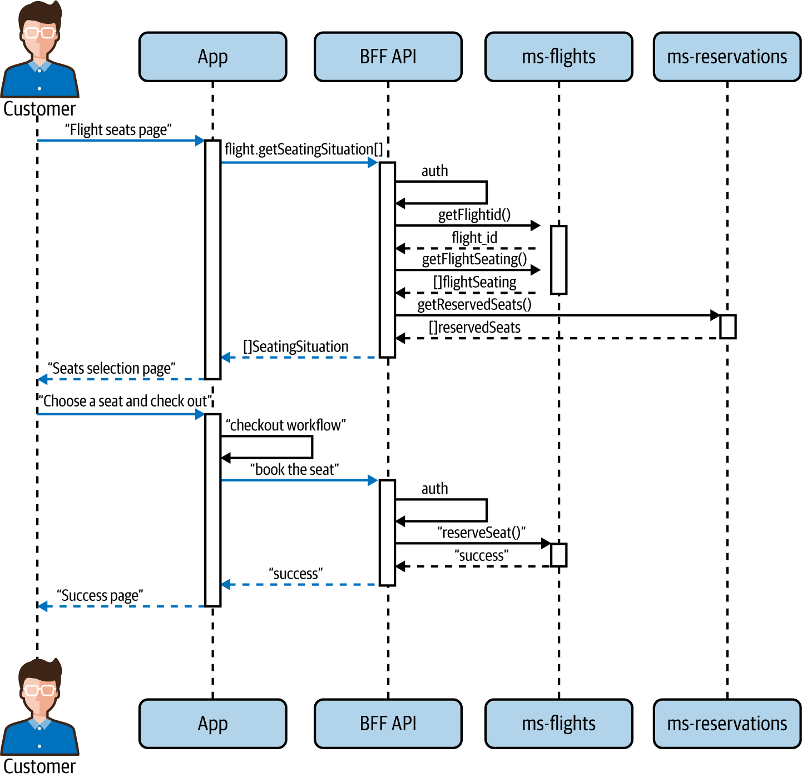
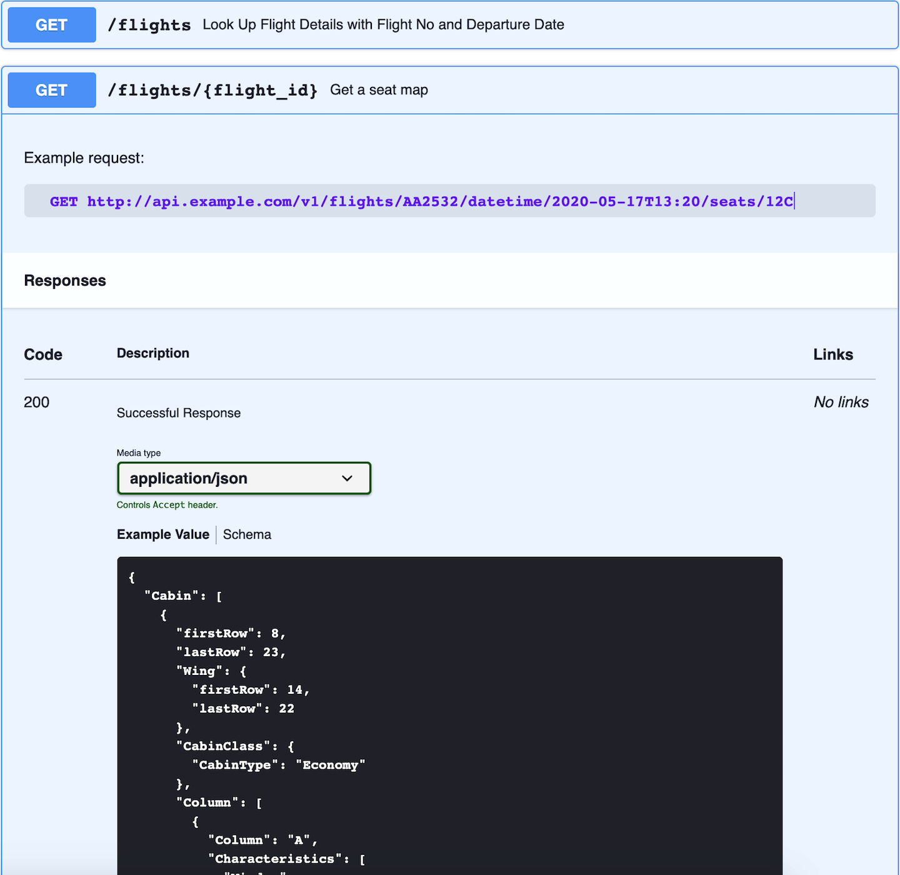
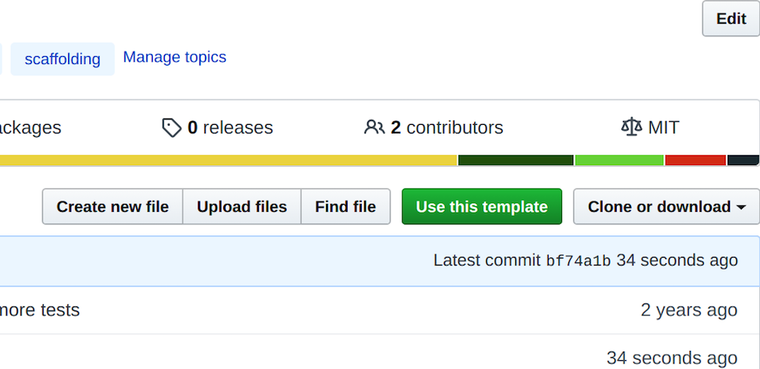
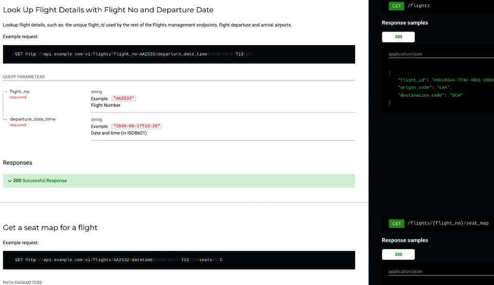
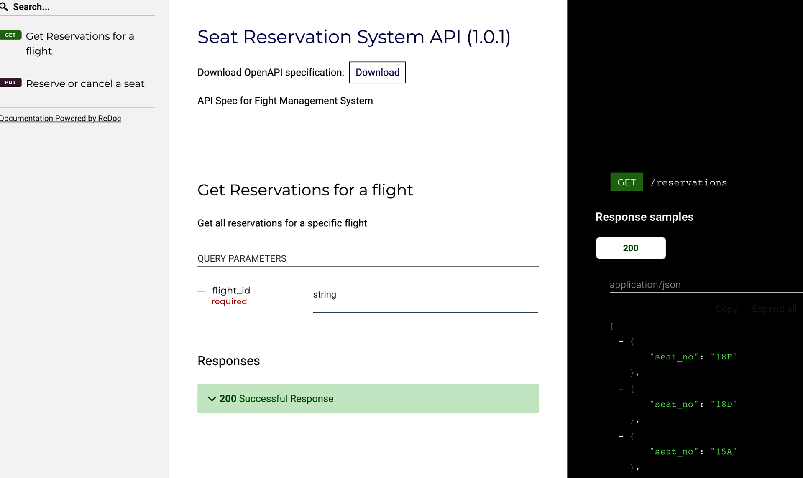

Hãy áp dụng một số kỹ thuật mà chúng ta đã bàn đến và triển khai một dự án mẫu gồm nhiều microservice. Phần hiện thực các microservice trong dự án mẫu này sẽ được đơn giản hóa đáng kể. Chúng ta sẽ chỉ trình bày lượng mã vừa đủ cho mục đích minh họa, nhưng các bước và cách tiếp cận mà chúng ta thảo luận có thể được áp dụng trực tiếp cho những dự án thực tế lớn hơn nhiều.
Chúng ta sẽ bắt đầu bằng việc xác định các ứng viên phù hợp cho microservice dựa trên phân tích bounded context bằng Event Storming, tương tự quy trình được mô tả trong Chương 4. Tiếp theo, chúng ta sẽ đi qua bảy bước của phương pháp thiết kế SEED(S) mà chúng ta đã thảo luận trong Chương 3, và kết thúc bằng việc viết mã cho cả hai microservice mẫu. Khi hiện thực các dịch vụ này, chúng ta sẽ áp dụng hướng dẫn về mô hình hóa dữ liệu từ Chương 5. Cuối cùng nhưng cũng rất quan trọng, chúng ta sẽ chỉ ra cách thiết lập và cấu hình đúng một môi trường phát triển thân thiện cho microservice, áp dụng nhiều khuyến nghị từ Chương 8, bao gồm việc tạo một umbrella project—một cách để chạy nhiều microservice cùng nhau trong workspace của lập trình viên.
Giả sử rằng một phiên Event Storming mà bạn thực hiện cho một sản phẩm phần mềm quản lý chuyến bay đã xác định được hai bounded context chính:
Quản lý chuyến bay
Quản lý đặt chỗ
Như đã thảo luận trong Chương 4, ở giai đoạn đầu, việc thiết kế microservice theo hướng coarse-grained thường mang lại hiệu quả. Cụ thể, chúng ta thường căn chỉnh chúng theo bounded context; tức là hai microservice đầu tiên của chúng ta có thể là ms-flights và ms-reservations!
Bây giờ, khi đã xác định được các microservice mục tiêu , chúng ta cần áp dụng quy trình thiết kế SEED(S) (được giới thiệu trong Chương 3) cho chúng. Theo bước đầu tiên của phương pháp SEED(S), chúng ta cần xác định các actor khác nhau. Với mục đích của mình, hãy giả định các actor sau:
Khách hàng đang cố đặt chuyến bay
Ứng dụng dành cho khách hàng của hãng hàng không (web, mobile, v.v.)
Các web API mà ứng dụng tương tác cùng (Trong Chương 3, chúng ta đã nhắc rằng một số người gọi chúng là “backends for frontends”, hay BFF API.)
Microservice quản lý chuyến bay: ms-flights
Microservice quản lý đặt chỗ: ms-reservations
Hãy xem một số JTBD (jobs to be done) mẫu mà nhóm sản phẩm của chúng ta có thể đã thu thập được từ phỏng vấn khách hàng và nghiên cứu phân tích nghiệp vụ.
Khi khách hàng tương tác với UI, ứng dụng cần hiển thị sơ đồ ghế cho biết ghế nào đã có người và ghế nào còn trống, để khách hàng có thể chọn ghế.
Khi khách hàng đang hoàn tất việc đặt chỗ, ứng dụng web cần giữ chỗ một ghế cho khách hàng, để ứng dụng có thể tránh xung đột đặt chỗ ghế ngoài ý muốn.
Hãy nhớ lại từ Chương 3 rằng chúng ta khuyến nghị BFF API chỉ nên là một lớp mỏng, không hiện thực business logic. Chúng chủ yếu chỉ điều phối các microservice. Vì vậy thường sẽ có những công việc mà BFF API cần đến các microservice. Danh sách công việc sau đây, tức các JTBD mang tính kỹ thuật hơn, mô tả các nhu cầu giữa BFF API và microservice:
Khi API được yêu cầu cung cấp sơ đồ ghế, API cần ms-flights cung cấp cấu hình chỗ ngồi của chuyến bay, để API có thể lấy thông tin còn trống và dựng kết quả cuối cùng.
Khi API cần hiển thị sơ đồ ghế, API cần ms-reservations cung cấp danh sách các ghế đã được đặt để API có thể bổ sung dữ liệu đó vào cấu hình chỗ ngồi và trả về sơ đồ ghế.
Khi API được yêu cầu đặt một ghế, API cần ms-reservations thực hiện việc đặt chỗ, để API có thể đặt được ghế đó.
Theo phương pháp SEED(S), tiếp theo chúng ta mô tả các tương tác do các công việc khác nhau biểu diễn, bằng các sơ đồ tuần tự UML ở định dạng PlantUML:
@startuml actor Customer as cust participant "Web App" as app participant "BFF API" as api participant "ms-flights" as msf participant "ms-reservations" as msr cust -[#blue]-> app ++: "Flight Seats Page" app -[#blue]-> api ++ : flight.getSeatingSituation() api -[#blue]-> api: auth api -> msf ++ : getFlightId() msf --> api: flight_id api -> msf: getFlightSeating() return []flightSeating api -> msr ++ : getReservedSeats() return []reservedSeats return []SeatingSituation return "Seats Selection Page" ||| cust -[#blue]->app ++: "Choose a seat & checkout" app-[#blue]->app: "checkout workflow" app-[#blue]->api ++: "book the seat" api -[#blue]->api: auth api->msr ++: "reserveSeat()" return "success" return "success" return "Success Page" @enduml
Phần này có thể được render (ví dụ bằng LiveUML) thành sơ đồ UML được minh họa trong Hình 9-1.
Như bạn có thể thấy rõ từ sơ đồ này, JTBD đầu tiên là hiển thị cho khách hàng một trang “ghế trên chuyến bay”. Để hoàn thành công việc này, một ứng dụng (hoặc website) sẽ cần gọi một frontend (BFF) API trả về “tình trạng” chỗ ngồi: một danh sách ghế kèm chỉ báo ghế nào đã có người và ghế nào còn trống. API trước tiên sẽ xác thực lời gọi để bảo đảm ứng dụng được phép
đặt những câu hỏi như vậy. Nếu auth thành công, trước hết nó sẽ cố lấy flight_id từ microservice ms-flights. Điều này là cần thiết vì khách hàng thường
chỉ nhập số hiệu chuyến bay không duy nhất (định danh một tuyến nhiều hơn là một chuyến bay cụ thể vào một ngày cụ thể) cùng ngày bay. Sau khi nhận được flight_id duy nhất, API sẽ lấy danh sách ghế từ ms-flights. Để có thể hiển thị các ghế đã có người, nó sẽ truy vấn riêng ms-reservations để lấy các đặt chỗ hiện có trên chuyến bay.

Điều đặc biệt quan trọng ở đây là cách chúng ta đang thực hành nguyên tắc đã mô tả trong Chương 3 rằng các microservice không nên gọi trực tiếp lẫn nhau mà thay vào đó được điều phối bởi một lớp API mỏng. Đó chính là lý do ms-flights không trực tiếp truy vấn danh sách ghế đã đặt từ ms-reservations. Khi API thu thập đủ mọi thông tin cần thiết, nó có thể trả về tập dữ liệu phong phú cho ứng dụng/website để phía đó dựng ra màn hình mong muốn cho khách hàng.
Ở phần thứ hai của Hình 9-1, chúng ta mô tả JTBD thứ hai của khách hàng: sau khi nhìn thấy tình trạng chỗ ngồi hiện tại, họ muốn chọn một ghế cụ thể (còn trống) và đặt ghế đó. Để hoàn thành tác vụ này, API lại cần auth rồi gọi một microservice là ms-reservations, sau đó trả trạng thái thành công hay thất bại cho ứng dụng dựa trên kết quả của lần thử đặt chỗ. Điều này cho phép ứng dụng thông báo cho khách hàng biết yêu cầu của họ có được thực hiện hay không.
Khi đã có các JTBD và hiểu rõ các tương tác, chúng ta có thể chuyển chúng thành query và action. Chúng ta sẽ làm điều này cho cả ms-flights lẫn ms-reservations. Trong Chương 3, chúng ta đã giải thích rằng bạn cũng nên thiết kế action và query cho BFF API, không chỉ cho microservice, nhưng ở đây chúng ta sẽ để phần việc đó như một bài tập cho người đọc.
Để tổng hợp các action và query cho ms-flights:
Đầu vào: flight_no, departure_local_date_time (định dạng ISO8601 và theo múi giờ địa phương)
Phản hồi: Một flight_id duy nhất định danh một chuyến bay cụ thể vào một ngày cụ thể. Trên thực tế, endpoint này rất có thể còn trả về các trường khác liên quan đến chuyến bay, nhưng chúng không liên quan đến ngữ cảnh của chúng ta nên được lược bỏ.
Đầu vào: flight_id
Phản hồi: Đối tượng Seat Map ở định dạng JSON1
Để tổng hợp các action và query cho ms-reservations:
Đầu vào: flight_id
Phản hồi: Danh sách các số ghế đã có người, mỗi số ghế ở định dạng như “2A”
Đầu vào: flight_id, customer_id, seat_num
Kết quả mong đợi: Một ghế được đặt và không còn khả dụng cho người khác, hoặc phát sinh lỗi nếu ghế đó không còn trống
Phản hồi: Thành công (200 Success) hoặc thất bại (403 Forbidden)
Như đã thảo luận trong Chương 3, giá trị của việc viết ra các action và query là chúng đưa chúng ta đến gần hơn rất nhiều với việc tạo đặc tả kỹ thuật cho dịch vụ so với khi công việc được trình bày ở dạng thiên về nghiệp vụ, tức jobs (JTBD).
Giờ đây khi đã có các action và query cho microservice của mình, chúng ta có thể tiếp tục mô tả các microservice định xây dựng theo một định dạng chuẩn. Trong trường hợp này, chúng ta sẽ xây dựng các microservice RESTful và mô tả chúng bằng OAS. Ở phần tiếp theo, chúng ta sẽ xem đặc tả cho hai microservice này có thể trông như thế nào.
Dựa trên đặc tả query và command mà chúng ta vừa thiết kế, việc chuyển thành OpenAPI Specification (OAS) trở nên khá thẳng thắn. Phần đầu của đặc tả thường là một số thông tin meta:
openapi:3.0.0info:title:Flights Management Microservice APIdescription:|API Spec for Flight Management Systemversion:1.0.1servers:-url:http://api.example.com/v1description:Production Server
Với endpoint /flights, bạn sẽ muốn cung cấp các tham số đầu vào flight_no và departure_date_time trong query string của request. Schema cũng nên mô tả cấu trúc JSON của response, bao gồm flight_id, mã định danh sân bay đi, mã sân bay đến và mã HTTP (200) cho phản hồi thành công. Phần này ở định dạng OpenAPI có thể trông như sau:
paths:/flights:get:summary:Look Up Flight Details with Flight No and Departure Datedescription:|Look up flight details, such as: the unique flight_id used by therest of the Flights management endpoints, flight departure andarrival airports.Example request:```GET http://api.example.com/v1/flights?flight_no=AA2532&departure_date_time=2020-05-17T13:20```parameters:-name:flight_noin:queryrequired:truedescription:Flight Number.schema:type:stringexample:AA2532-name:departure_date_timein:queryrequired:truedescription:Date and time (in ISO8601)schema:type:stringexample:2020-05-17T13:20responses:'200':# success responsedescription:Successful Responsecontent:application/json:schema:type:arrayitems:type:objectproperties:flight_id:type:stringexample:"edcc03a4-7f4e-40d1-898d-bf84a266f1b9"origin_code:type:stringexample:"LAX"destination_code:type:stringexample:"DCA"example:flight_id:"edcc03a4-7f4e-40d1-898d-bf84a266f1b9"origin_code:"LAX"
Khi bạn thiết kế đặc tả cho endpoint /flights/{flight_no}/seat_map, endpoint này có thể nhận tham số đầu vào flight_no ngay trong URL path thay vì trong phần query của URL. Trong đối tượng response, với mục đích minh họa, chúng ta sử dụng một cấu trúc đối tượng SeatMap mô phỏng theo chuẩn vàng của ngành là Seat Map API của Sabre. Nếu thực sự xây dựng một API thương mại, bạn sẽ cần tự thiết kế cách hiện thực của mình hoặc xin phép tái sử dụng từ tác giả gốc của thiết kế đó:
/flights/{flight_no}/seat_map:get:summary:Get a seat map for a flightdescription:|Example request:```GET http://api.example.com/v1/flights/AA2532/datetime/2020-05-17T13:20/seats/12C```parameters:-name:flight_noin:pathrequired:truedescription:Unique Flight Identifierschema:type:stringexample:"edcc03a4-7f4e-40d1-898d-bf84a266f1b9"responses:'200':# success responsedescription:Successful Responsecontent:application/json:schema:type:objectproperties:Cabin:type:arrayitems:type:objectproperties:firstRow:type:numberexample:8lastRow:type:numberexample:23Wing:type:objectproperties:firstRow:type:numberexample:14lastRow:type:numberexample:22CabinClass:type:objectproperties:CabinType:type:stringexample:EconomyColumn:type:arrayitems:type:objectproperties:Column:type:stringexample:ACharacteristics:type:arrayexample:-Windowitems:type:stringRow:type:arrayitems:type:objectproperties:RowNumber:type:numberexample:8Seat:type:arrayitems:type:objectproperties:premiumInd:type:booleanexample:falseexitRowInd:type:booleanexample:falserestrictedReclineInd:type:booleanexample:falsenoInfantInd:type:booleanexample:falseNumber:type:stringexample:AFacilities:type:arrayitems:type:objectproperties:Detail:type:objectproperties:content:type:stringexample:LegSpaceSeat
Bạn có thể xem toàn bộ mã nguồn của đặc tả tại trang GitHub của cuốn sách này.
OAS có thể được render bằng nhiều trình biên tập khác nhau; chẳng hạn như Swagger Editor. Việc render đặc tả ở trên sẽ tạo ra kết quả giống như Hình 9-2.

Tương tự OAS của microservice flights, thiết kế cho các endpoint của hệ thống đặt chỗ có thể sẽ đại khái như sau:
openapi:3.0.0info:title:Seat Reservation System APIdescription:|API Spec for Fight Management Systemversion:1.0.1servers:-url:http://api.example.com/v1description:Production Serverpaths:/reservations:get:summary:Get Reservations for a flightdescription:|Get all reservations for a specific flightparameters:-name:flight_idin:queryrequired:trueschema:type:stringresponses:'200':# success responsedescription:Successful Responsecontent:application/json:schema:type:arrayitems:type:objectproperties:seat_no:type:stringexample:"18F"example:-{seat_no:"18F"}-{seat_no:"18D"}-{seat_no:"15A"}-{seat_no:"15B"}-{seat_no:"7A"}put:summary:Reserve or cancel a seatdescription:|Reserves a seat or removes a seat reservationrequestBody:required:truecontent:application/json:schema:type:objectproperties:flight_id:description:Flight's Unique Identifier.type:stringexample:"edcc03a4-7f4e-40d1-898d-bf84a266f1b9"customer_id:description:Registered Customer's Unique Identifiertype:stringexample:"2e850e2f-f81d-44fd-bef8-3bb5e90791ff"seat_num:description:seat numbertype:stringexample:flight_id:"edcc03a4-7f4e-40d1-898d-bf84a266f1b9"customer_id:"2e850e2f-f81d-44fd-bef8-3bb5e90791ff"seat_num:"8D"responses:'200':description:|Success.content:application/json:schema:type:objectproperties:status:type:stringenum:["success","error"]example:"success"'403':description:seat(s) unavailable. Booking failed.content:application/json:schema:type:objectproperties:error:type:stringdescription:type:stringexample:error:"Couldnotcompletereservation"description:"Seatalreadyreserved.Cannotdouble-book"
Giờ đây khi đã có thiết kế dịch vụ và các OAS tương ứng, đã đến lúc chuyển sang bước cuối cùng trong quy trình SEED(S): viết mã cho các microservice.
Khi hiện thực các microservice flights và reservations, chúng ta sẽ thực hành những nguyên tắc đã được bàn tới trước đó trong cuốn sách này. Cụ thể, chúng ta sẽ dùng các tech stack khác nhau cho các dịch vụ này để minh họa khả năng hỗ trợ hiện thực không đồng nhất. Microservice reservations sẽ được xây dựng bằng Python và Flask, còn microservice flights sẽ được xây dựng bằng Node/Express.js.
Để nhấn mạnh nhu cầu về tính độc lập dữ liệu mà chúng ta đã bàn kỹ trong Chương 5, chúng ta không chỉ bảo đảm rằng hai microservice không dùng chung bất kỳ không gian dữ liệu nào, mà còn chủ đích hiện thực chúng bằng những hệ thống dữ liệu backend hoàn toàn khác nhau: Redis cho reservations và MySQL cho flights. Chúng ta cũng sẽ giải thích vì sao mỗi microservice này lại hưởng lợi từ lựa chọn cơ chế lưu trữ dữ liệu tương ứng. Hãy bắt đầu với phần dữ liệu của microservice hệ thống reservations.
Trong hệ thống reservations, chúng ta cần có khả năng lưu được tập các ghế đã đặt cho một chuyến bay và đặt một ghế nếu ghế đó chưa bị book. Redis có một cấu trúc dữ liệu đơn giản nhưng cực kỳ phù hợp với use case này: hashes.
Redis hash được tối ưu cho việc lưu ánh xạ gồm các cặp key/value, trong đó cả key lẫn value đều là chuỗi. Chúng thường được dùng để lưu các đối tượng phẳng như một user với tên, họ, email, v.v. Với chúng ta, nó có thể đóng vai trò là nơi lưu trữ vững chắc cho thông tin đặt chỗ ghế. Chúng ta có thể lưu một đối tượng hash cho mỗi flight_id (một chuyến bay cụ thể), trong đó key của hash là các số ghế trên chuyến bay và value là customer_id của khách hàng đã đặt ghế đó. Redis có các lệnh để đặt giá trị mới trong hash và để lấy toàn bộ các giá trị đã được đặt (khi chúng ta cần biết mọi ghế đã được đặt), và rất tiện lợi là có cả một lệnh cho phép đặt giá trị chỉ khi key tương ứng (ghế) chưa có giá trị. Điều này hoàn hảo với chúng ta, vì thông thường ta không muốn cho phép double-booking một ghế trên chuyến bay.
Hãy xem một ví dụ đặt vài ghế trên một chuyến bay được định danh duy nhất bằng flight_id là 40d1-898d-bf84a266f1b9. Nếu bạn đã có bản cài Redis hoạt động bình thường, hoặc dùng Redis CLI từ workspace của microservice reservations bằng cách chạy make redis sau khi checkout repository GitHub đó, bạn sẽ có thể chạy các lệnh sau:
> HSETNX flight:40d1-898d-bf84a266f1b9 12B b4cdf96e-a24a-a09a-87fb1c47567c (integer) 1 > HSETNX flight:40d1-898d-bf84a266f1b9 12C e0392920-a24a-b6e3-8b4ebcbe7d5c (integer) 1 > HSETNX flight:40d1-898d-bf84a266f1b9 11A f4892d9e-a24a-8ed1-2397df0ddba7 (integer) 1 > HSETNX flight:40d1-898d-bf84a266f1b9 3A 017d40c6-a24b-b6d7-4bb15d04a10b (integer) 1 > HSETNX flight:40d1-898d-bf84a266f1b9 3B 0c27f7c8-a24b-9556-fb37c840de89 (integer) 1 > HSETNX flight:40d1-898d-bf84a266f1b9 22A 0c27f7c8-a24b-9556-fb37c840de89 (integer) 1 > HSETNX flight:40d1-898d-bf84a266f1b9 22B 24ae6f02-a24b-a149-53d7a72f10c0 (integer) 1
Lệnh HSETNX mà chúng ta dùng ở đây sẽ gán giá trị cho key HSET được chỉ định thành giá trị mong muốn chỉ khi key đó chưa có giá trị. Nhờ vậy, chúng ta tránh được việc đặt các ghế đã được gán.
Hãy xem cách chúng ta lấy tất cả các ghế đã có người trên một chuyến bay cụ thể:
> HKEYS flight:40d1-898d-bf84a266f1b9 1) "12B" 2) "12C" 3) "11A" 4) "3A" 5) "3B" 6) "22A" 7) "22B"
Nếu muốn lấy cả key lẫn value, chúng ta cũng có thể làm như sau:
> HGETALL flight:40d1-898d-bf84a266f1b9 1) "12B" 2) "b4cdf96e-a24a-a09a-87fb1c47567c" 3) "12C" 4) "e0392920-a24a-b6e3-8b4ebcbe7d5c" 5) "11A" 6) "f4892d9e-a24a-8ed1-2397df0ddba7" 7) "3A" 8) "017d40c6-a24b-b6d7-4bb15d04a10b" 9) "3B" 10) "0c27f7c8-a24b-9556-fb37c840de89" 11) "22A" 12) "0c27f7c8-a24b-9556-fb37c840de89" 13) "22B" 14) "24ae6f02-a24b-a149-53d7a72f10c0"
Bây giờ hãy xem điều gì xảy ra nếu ta cố double-book một ghế đã được đặt, chẳng hạn 12C:
> HSETNX flight:40d1-898d-bf84a266f1b9 12C 083a6fc2-a24d-889b-6fc480858a38 (integer) 0
Hãy để ý rằng phản hồi của lệnh này là (integer) 0 thay vì (integer) 1 như chúng ta nhận được ở các lệnh HSETNX trước đó. Điều này cho biết thực tế có 0 field được cập nhật, và lý do là ghế 12C đã được đặt rồi.
Như bạn có thể thấy, việc chọn Redis làm data store cho ms-reservations đã
khiến phần hiện thực trở nên dễ dàng và tự nhiên. Chúng ta có thể dùng những
cấu trúc dữ liệu rất phù hợp, như HSET, để đáp ứng nhu cầu một cách gọn gàng và hiệu quả.
Lệnh HSETNX cho phép chúng ta tránh double-booking ngoài ý muốn theo cách đáng tin cậy và trực tiếp.
Redis là một key/value store tuyệt vời có thể dùng trong rất nhiều use case khác nhau, đó cũng là lý do nó có lượng người hâm mộ rất lớn trong giới lập trình viên. Tuy nhiên, nó sẽ không phải là cơ sở dữ liệu hoàn hảo cho mọi use case. Đôi khi chúng ta có những nhu cầu dữ liệu được đáp ứng tốt hơn bởi những cơ sở dữ liệu phổ biến khác.
Để minh họa điều đó, trong phần tiếp theo, chúng ta sẽ hiện thực dữ liệu cho microservice ms-flights bằng một cơ sở dữ liệu SQL truyền thống.
Mô hình dữ liệu đầu tiên mà chúng ta cần ở đây nên chứa seat map. Như chúng ta đã thấy trong OAS của microservice flights, seat map là một đối tượng JSON phức tạp. MySQL có thể là nơi lưu trữ tốt hơn cho kiểu dữ liệu này so với Redis tiêu chuẩn. Kể từ MySQL 5.7.8, MySQL đã có hỗ trợ native mạnh mẽ cho kiểu dữ liệu JSON. Phần hỗ trợ này còn được mở rộng và cải thiện trong phiên bản MySQL 8.x mới nhất. Hiện nay nó còn hỗ trợ cập nhật tại chỗ, theo kiểu atomic cho giá trị JSON và cú pháp JSON Merge Patch. Trong khi đó, Redis chỉ hỗ trợ JSON thông qua một module RedisJSON không được dựng sẵn trong bản phân phối Redis tiêu chuẩn.
Một kiểu dữ liệu JSON được hiện thực tốt mang lại nhiều lợi thế rõ rệt so với việc lưu JSON trong một cột chuỗi: kiểm tra tính hợp lệ của tài liệu JSON khi insert, lưu trữ nhị phân được tối ưu bên trong, khả năng tra cứu trực tiếp các đối tượng con và giá trị lồng nhau bằng key, v.v.
Ngoài ra, ở endpoint tra cứu, chúng ta cần truy vấn dữ liệu theo hai trường: flight_no và datetime. Cơ sở dữ liệu quan hệ là một cấu trúc tự nhiên hơn cho những truy vấn như vậy. Trong Redis, có lẽ chúng ta sẽ phải tạo một trường ghép để
đạt được điều tương tự. Tóm lại, dù về mặt kỹ thuật chúng ta cũng có thể hiện thực dịch vụ này bằng Redis, vẫn có những lý do để chọn MySQL, trong đó có việc MySQL giúp chúng ta minh họa cách sử dụng những cơ sở dữ liệu khác nhau cho các dịch vụ khác nhau. Tình huống thực tế hiển nhiên sẽ phức tạp hơn nhiều, với nhiều khía cạnh hơn cần cân nhắc.
Hãy xem bảng seat_maps:
CREATETABLE`seat_maps`(`flight_no`varchar(10)NULL,`seat_map`jsonNULL,`origin_code`varchar(10)NULL,`destination_code`varchar(10)NULL,PRIMARYKEY(`flight_no`));
Một bảng khác mà chúng ta cần là ánh xạ giữa flight_id với flight_no và datetime. Script tạo bảng này có thể trông như sau:
CREATETABLE`flights`(`flight_id`varchar(36)NOTNULL,`flight_no`varchar(10)NULL,`flight_date`datetime(0)NULL,PRIMARYKEY(`flight_id`),INDEX`idx_flight_date`(`flight_no`,`flight_date`)FOREIGNKEY(flight_no)REFERENCESseat_maps(flight_no));
Hãy chèn seat map mẫu đầu tiên của chúng ta:
INSERTINTO`seat_maps`(`flight_no`,`seat_map`,`origin_code`,/`destination_code`)VALUES('AA2532','{\"Cabin\": [{\"Row\": [{\"Seat\": /[{\"Number\": \"A\", \"Facilities\": [{\"Detail\": {\"content\": /\"LegSpaceSeat\"}}], \"exitRowInd\": false, \"premiumInd\": false, /\"noInfantInd\": false, \"restrictedReclineInd\": false}], \"RowNumber\": /8}], \"Wing\": {\"lastRow\": 22, \"firstRow\": 14}, \"Column\": /[{\"Column\": \"A\", \"Characteristics\": [\"Window\"]}], \"lastRow\": 23, /\"firstRow\": 8, \"CabinClass\": {\"CabinType\": \"Economy\"}}]}',/'LAX','DCA');
Khi đã có giá trị JSON phù hợp trong cơ sở dữ liệu, chúng ta có thể dễ dàng chọn các giá trị cụ thể trong đó hoặc lọc theo những giá trị cụ thể. Ví dụ:
selectseat_map->>"$.Cabin[0].firstRow"fromseat_maps
Giờ đây khi đã có mô hình dữ liệu hoạt động cho cả hai microservice, chúng ta có thể đi sâu hơn vào phần hiện thực mã nguồn cho chúng.
Bây giờ chúng ta sẽ hướng tới mục tiêu thứ hai, nền tảng của “10 Nguyên tắc Workspace cho Trải nghiệm Lập trình viên Vượt trội”, là khởi tạo microservice mới thật nhanh bằng cách dùng các template đã được kiểm chứng kỹ cho từng tech stack phù hợp. Với microservice flights được hiện thực bằng Node.js, chúng ta sẽ dùng một bootstrapper phổ biến là NodeBootstrap. Với microservice reservation dựa trên Python, chúng ta sẽ dùng một repository template trên GitHub chứa phần lớn mã boilerplate mà chúng ta cần.
Dựa trên 10 nguyên tắc đó, việc dùng bất kỳ template nào cũng giả định rằng bạn đã có Docker hoạt động được và GNU Make, vì chúng ta sử dụng cả hai. Ngoài ra thì không có yêu cầu nào khác. Trong Chương 8, chúng ta đã chỉ ra cách thiết lập Docker trên nhiều nền tảng. GNU Make thường được cài sẵn trên macOS và các hệ Linux/Unix. Có nhiều cách để cài GNU Make trên Windows. Cách mà chúng tôi khuyến nghị là Windows Subsystem for Linux.
Lưu ý rằng trong toàn bộ các ví dụ tiếp theo của chương này, chúng ta giả định bạn làm việc trên máy host của mình mà không cần đăng nhập vào các Docker container.
Khi làm việc trên một dự án được container hóa, trình soạn thảo mã mà bạn yêu thích sẽ được cài trên máy macOS, Windows hoặc Linux của bạn, và bạn sẽ thực thi nhiều lệnh make khác nhau trên chính máy đó. Docker cần được cài đặt/sẵn sàng, và phần lớn kết quả từ các lệnh bạn chạy sẽ thực thi bên trong container,
nhưng hiếm khi bạn phải shell trực tiếp vào container, trừ khi đang debug một vấn đề ở mức thấp.
Để dùng NodeBootstrap nhằm khởi động nhanh một microservice Node/Express, bạn có thể cài bootstrapper của nó bằng node install -g nodebootstrap (nếu hệ thống của bạn đã có Node), hoặc clone repository template GitHub này.
Dù cách đầu có thể phần nào dễ hơn, chúng ta sẽ làm theo cách thứ hai vì không muốn giả định rằng bạn đã thiết lập Node trên hệ thống của mình. Hãy nhấn “Use this template” trên trang repository chính của nodebootstrap-microservice, như minh họa ở Hình 9-3.

Sau khi đã tạo một repository mới cho microservice ms-flights ở vị trí mà bạn chọn, hãy checkout nó về máy phát triển của bạn và bắt đầu chỉnh sửa bằng cách viết mã.
Một điểm hay của template NodeBootstrap là nó đi kèm hỗ trợ đầy đủ cho OAS của microservice. Hãy lấy đặc tả mà chúng ta đã thiết kế trước đó và đưa vào tệp docs/api.yml, thay thế đặc tả mẫu đang có sẵn ở đó. Hãy chắc chắn bạn đang ở trong thư mục con docs, rồi chạy make start:
→ make start docker run -d --rm --name ms-nb-docs -p 3939:80 -v\ms-flights/docs/api.yml:/usr/share/nginx/html/swagger.yaml\-eSPEC_URL=swagger.yaml redocly/redoc:v2.0.0-rc.8-1 49e0986e318288c8bf6934e3d50ba93537ddf3711453ba6333ced1425576ecdf server started at: http://0.0.0.0:3939
Thao tác này sẽ render đặc tả thành một template HTML đẹp mắt và cung cấp nó tại http://0.0.0.0:3939. Kết quả render có lẽ sẽ trông như Hình 9-4.

Microservice Nodebootstrap đi kèm một module mẫu tên “users”, nằm trong thư mục lib/users. Vì chúng ta không cần module quản lý người dùng mà lại cần module quản lý chuyến bay, hãy đổi tên thư mục đó thành flights và xóa một module mặc định khác là lib/homedoc, vì chúng ta cũng không cần tới nó. Khi xóa thư mục lib/homedoc, bạn cũng phải bỏ phần hook của nó trong appConfig.js ở thư mục gốc. Đoạn này nằm khoảng dòng 24 và có nội dung đại loại như sau:
app.use('/',require('homedoc'));// Attach to root route
Tương tự, hãy thay đổi phần hookup cho module flights trong cùng tệp đó để dòng lệnh trở thành:
app.use('/flights',require('flights'));// Attach to sub-route
Sau khi hoàn tất các chỉnh sửa này, hãy sửa lib/flights/controllers/mappings.js để thêm một số kiểm tra đầu vào và chỉ ra các hàm từ module actions của microservice sẽ được gọi cho từng route endpoint API trong hai endpoint của bạn:
const{spieler,check,matchedData,sanitize}=require('spieler')();constrouter=require('express').Router({mergeParams:true});constactions=require('./actions');constlog=require("metalogger")();constflightNoValidation=check('flight_no','flight_no must be at least 3 chars long and contain letters and numbers').exists().isLength({min:3}).matches(/[a-zA-Z]{1,4}\d+/)constdateTimeValidation=check('departure_date_time','departure_date_time must be in YYYY-MM-ddThh:mm format').exists().matches(/\d{4}-\d{2}-\d{2}T\d{2}:\d{2}/)constflightsValidator=spieler([flightNoValidation,dateTimeValidation]);constseatmapsValidator=spieler([flightNoValidation]);router.get('/',flightsValidator,actions.getFlightInfo);router.get('/:flight_no/seat_map',seatmapsValidator,actions.getSeatMap);module.exports=router;
Như bạn có thể thấy, trong tệp này chúng ta đang thiết lập route cho hai endpoint chính và các validator để bảo đảm tham số đầu vào vừa tồn tại vừa đúng định dạng. Nếu không đúng, NodeBootstrap cũng có sẵn cơ chế thông báo lỗi chuẩn để báo cho client biết.
Bây giờ hãy hiện thực một số logic. Trước tiên, chúng ta cần tạo các bảng MySQL và một ít dữ liệu mẫu. Như bạn có thể đoán, Nodebootstrap cũng cung cấp một giải pháp dễ dàng cho việc này dưới dạng database migration: các script mã hóa các thay đổi trên cơ sở dữ liệu và cho phép bạn áp dụng chúng về sau ở bất kỳ môi trường nào.
Chúng ta có thể tạo một vài database migration bằng một số lệnh make như sau:
→ make migration-createname=seat-maps docker-compose -p msupandrunning up -d ms-flights-db is up-to-date Starting ms-flights ...donedocker-compose -p msupandrunningexecms-flights ./node_modules/db-migrate/bin/db-migrate create seat-maps --sql-file[INFO]Created migration at /opt/app/migrations/20200602055112-seat-maps.js[INFO]Created migration up sql file at /opt/app/migrations/sqls/20200602055112-seat-maps-up.sql[INFO]Created migration down sql file at /opt/app/migrations/sqls/20200602055112-seat-maps-down.sql sudo chown -R$USER./migrations/sqls/[sudo]passwordforirakli: → make migration-createname=flights docker-compose -p msupandrunning up -d ms-flights-db is up-to-date ms-flights is up-to-date docker-compose -p msupandrunningexecms-flights ./node_modules/db-migrate/bin/db-migrate create flights --sql-file[INFO]Created migration at /opt/app/migrations/20200602055121-flights.js[INFO]Created migration up sql file at /opt/app/migrations/sqls/20200602055121-flights-up.sql[INFO]Created migration down sql file at /opt/app/migrations/sqls/20200602055121-flights-down.sql sudo chown -R$USER./migrations/sqls/ → make migration-createname=sample-data docker-compose -p msupandrunning up -d ms-flights-db is up-to-date ms-flights is up-to-date docker-compose -p msupandrunningexecms-flights ./node_modules/db-migrate/bin/db-migrate create sample-data --sql-file[INFO]Created migration at /opt/app/migrations/20200602055127-sample-data.js[INFO]Created migration up sql file at /opt/app/migrations/sqls/20200602055127-sample-data-up.sql[INFO]Created migration down sql file at /opt/app/migrations/sqls/20200602055127-sample-data-down.sql sudo chown -R$USER./migrations/sqls/
Sau bước này, chúng ta nên mở các tệp SQL tương ứng và chèn nội dung trong các Ví dụ 9-1, 9-2 và 9-3 vào từng tệp.
CREATETABLE`seat_maps`(`flight_no`varchar(10)NOTNULL,`seat_map`jsonNOTNULL,`origin_code`varchar(10)NOTNULL,`destination_code`varchar(10)NOTNULL,PRIMARYKEY(`flight_no`))ENGINE=InnoDBDEFAULTCHARSET=utf8;
CREATETABLE`flights`(`flight_id`varchar(36)NOTNULL,`flight_no`varchar(10)NOTNULL,`flight_date`datetime(0)NULL,PRIMARYKEY(`flight_id`),FOREIGNKEY(`flight_no`)REFERENCESseat_maps(`flight_no`))ENGINE=InnoDBDEFAULTCHARSET=utf8;
INSERTINTO`seat_maps`VALUES('AA2532','{\"Cabin\": [{\"Row\": [{\"Seat\": [{\"Number\": \"A\",\"Facilities\": [{\"Detail\": {\"content\": \"LegSpaceSeat\"}}],\"exitRowInd\": false, \"premiumInd\": false, \"noInfantInd\": false,\"restrictedReclineInd\": false}], \"RowNumber\": 8}],\"Wing\": {\"lastRow\": 22, \"firstRow\": 14},\"Column\": [{\"Column\": \"A\", \"Characteristics\": [\"Window\"]}],\"lastRow\": 23, \"firstRow\": 8,\"CabinClass\": {\"CabinType\": \"Economy\"}}]}','LAX','DCA');
Khi đã có những tệp này, bạn có thể chỉ cần khởi động lại dự án bằng make restart để migration được áp dụng tự động (các migration mới sẽ được áp dụng ở mỗi lần khởi động dự án nhằm giữ mọi môi trường cài đặt nhất quán), hoặc có thể chạy tường minh một tác vụ áp migration bằng make migrate.
Đối với các chỉnh sửa còn lại, bạn sẽ muốn:
Đổi ms-nodebootstrap-example thành ms-flights trong nhiều tệp khác nhau, nếu bạn không cài dự án bằng tiện ích nodebootstrap mà chỉ clone repository (cách đầu tiên sẽ tự đổi tên giúp bạn).
Chỉnh sửa phần còn lại của mã nguồn để hiện thực các endpoint flights và seat_maps, đồng thời nối chúng với cơ sở dữ liệu.
Bạn có thể xem một phiên bản đang hoạt động của mã ms-flights mẫu tại repository GitHub của cuốn sách này.
Khi mọi thứ hoạt động ổn, bạn sẽ có thể truy cập endpoint /flights của mình ở local qua một URL như sau:
http://0.0.0.0:5501/flights?flight_no=AA34&departure_date_time=2020-05-17T13:20
Endpoint seat_maps sẽ xuất hiện trong một URL như sau:
http://0.0.0.0:5501/flights/AA2532/seat_map
Hãy chắc chắn rằng bạn xem qua toàn bộ các target trong makefile. Hãy thử chạy một target để cảm nhận trải nghiệm dành cho lập trình viên mà template project mang lại, cũng như loại tiện ích mà bạn nên cố gắng cung cấp cho đội ngũ của mình thông qua các template. Để make test hoạt động, cần có thêm một số chỉnh sửa liên quan đến việc chúng ta đã xóa bớt chức năng khỏi dự án mẫu. Chúng ta không trình bày chi tiết các thay đổi đó ở đây, vì vậy tốt nhất là hãy xem trực tiếp repository /ms-flights của cuốn sách này, nơi đã có đầy đủ các chỉnh sửa cần thiết. Nếu gặp vấn đề, bạn cứ thoải mái gửi bug request.
Để quản lý vòng đời của các container mà ứng dụng sẽ được triển khai vào, hầu hết các giải pháp quản lý container (ví dụ Kubernetes, thứ mà chúng ta sẽ dùng ở phần sau của cuốn sách) đều cần dịch vụ phải expose một health endpoint. Trong trường hợp của Kubernetes, nhìn chung bạn nên cung cấp endpoint cho liveness và readiness.
Template NodeBootstrap đã có sẵn một bản hiện thực mẫu cho việc này; chúng ta chỉ cần sửa lại cho phù hợp với codebase ms-flights.
Hãy bắt đầu bằng cách thay các dòng 13–17 trong appConfig.js bằng đoạn mã như sau:
// For Liveness Probe, defaults may be all you need.constlivenessCheck=healthcheck({"path":"/ping"});app.use(livenessCheck.express());// For readiness check, let's also test the DBconstcheck=healthcheck();constAdvancedHealthcheckers=require('healthchecks-advanced');constadvCheckers=newAdvancedHealthcheckers();// Database health check is cached for 10000ms = 10 seconds!check.addCheck('db','dbQuery',advCheckers.dbCheck,{minCacheMs:10000});app.use(check.express());
Thao tác này sẽ tạo một kiểm tra đơn giản kiểu “Tôi còn sống không?” tại /ping (trong Kubernetes gọi là liveness probe) và một kiểm tra nâng cao hơn kiểu “Cơ sở dữ liệu đã sẵn sàng chưa? Tôi đã thực sự làm được những việc
hữu ích chưa?” tại /health (trong Kubernetes gọi là readiness probe). Sử dụng hai probe cho tình trạng sức khỏe tổng thể là rất thuận tiện, vì một microservice đang chạy không phải lúc nào cũng đồng nghĩa với việc nó hoàn toàn hoạt động được. Nếu dependency của nó, chẳng hạn như cơ sở dữ liệu, chưa chạy xong hoặc đang bị down, thì nó sẽ chưa thực sự sẵn sàng cho công việc hữu ích.
Đối số thứ tư {minCacheMs: 10000} trong lời gọi .addCheck() thiết lập thời lượng cache tối thiểu ở phía máy chủ, tính bằng mili giây. Điều đó có nghĩa là bạn có thể yêu cầu health-check middleware (module mà chúng ta sử dụng) chỉ chạy probe health check tốn kém, có truy vấn cơ sở dữ liệu, đối với MySQL tối đa mỗi 10 giây (10.000 mili giây) một lần!
Ngay cả khi hạ tầng health-probing của bạn (ví dụ Kubernetes) gọi health-check endpoint rất thường xuyên, middleware cũng chỉ thực sự kích hoạt các lời gọi mà bạn đánh giá là đủ nhẹ. Với những lời gọi nặng hơn (ví dụ lời gọi cơ sở dữ liệu như truy vấn MySQL), middleware (module Maikai) sẽ trả về giá trị đã cache để tránh gây áp lực cho các hệ thống downstream như cơ sở dữ liệu. Để hoàn tất thiết lập, hãy sửa thêm tệp libs/healthchecks-advanced/index.js và đổi tên hàm thành dbCheck. Sau đó cập nhật câu truy vấn SQL để các dòng 7–10 trở thành:
asyncdbCheck(){conststart=newDate();constconn=awaitdb.conn();constquery='select count(1) from seat_maps';
Nếu mọi thứ được thực hiện đúng và microservice đang chạy ở trạng thái khỏe mạnh, khi bạn chạy curl http://0.0.0.0:5501/health, bạn sẽ nhận được đầu ra của health endpoint trông như sau:
{"details":{"db:dbQuery":{"status":"pass","metricValue":15,"metricUnit":"ms","time":"2020-06-28T22:32:46.167Z"}},"status":"pass"}
Nếu thay vào đó bạn chạy curl http://0.0.0.0:5501/ping, bạn sẽ nhận được đầu ra đơn giản hơn
như sau:
{"status":"pass"}
Nếu gặp bất kỳ vấn đề nào khi tự chỉnh sửa mã, bạn có thể xem phần hiện thực đầy đủ của microservice tại repository GitHub của cuốn sách này.
Giờ đây khi đã có một microservice ms-flights hoạt động đầy đủ được hiện thực bằng Node.js và MySQL, hãy chuyển sang phần mã nguồn phía sau microservice ms-reservations.
Chúng ta sẽ hiện thực microservice thứ hai (ms-reservations) bằng Python và Flask, sử dụng Redis làm data store. Một lần nữa, đi theo mục tiêu thứ hai của “10 Nguyên tắc Workspace cho Trải nghiệm Lập trình viên Vượt trội”, chúng ta sẽ dùng một repository template GitHub cho stack Python/Flask.
Như bạn có thể thấy, template này có nhiều đặc điểm giống với template NodeBootstrap mà chúng ta vừa dùng cho ms-flights: nó chỉ yêu cầu Docker và make hoạt động bình thường, có đầy đủ các target make để hỗ trợ trải nghiệm phát triển trơn tru giống như NodeBootstrap, và có sẵn cấu hình hoạt động cho các tác vụ phổ biến như testing, linting, v.v. Tuy nhiên, có một thứ nó còn thiếu là hỗ trợ cho database migration.
Khác với MySQL, Redis thực ra không dùng schema cơ sở dữ liệu, nên không có nhu cầu cấp bách phải mã hóa các định nghĩa dữ liệu khác nhau cho việc tạo “bảng”. Bạn vẫn có thể dùng migration để tạo dữ liệu kiểm thử ở nhiều môi trường khác nhau, nhưng chúng tôi sẽ để nhiệm vụ đó cho người đọc tự khám phá và trải nghiệm. Đây là một trong những điểm template này khác với các template sử dụng cơ sở dữ liệu SQL.
Tương tự ms-flights, chúng ta sẽ bắt đầu chỉnh sửa mã bằng cách đặt OAS phù hợp mà chúng ta đã phát triển ở phần trước của chương này vào docs/api.yml của repository ms-reservations mới. Sau khi chạy make start trong thư mục docs (lưu ý: đây là một makefile tách riêng với makefile chính!), bạn sẽ thấy đặc tả API cho reservations được render tại http://0.0.0.0:3939, như thể hiện trong Hình 9-5.

Chúng ta sẽ bắt đầu chỉnh sửa template microservice của mình bằng cách hiện thực endpoint tạo reservation.
Hãy mở service.py và thay mapping cho endpoint update_user POST /users bằng mapping cho PUT /reservations, như sau:
@app.route('/reservations',methods=['PUT'])defreserve():"""Endpoint that reserves a seat for a customer"""json_body=request.get_json(force=True)resp=handlers.reserve(json_body)if(resp.get("status")=="success"):returnjsonify(resp)else:returnResponse(json.dumps(resp),status=403,mimetype='application/json')
Như bạn có thể thấy, dựa trên kết quả của thao tác đặt chỗ, chúng ta sẽ trả về thành công hoặc lỗi cùng với mã lỗi HTTP tương ứng.
Để hiện thực đầy đủ endpoint này, chúng ta cũng cần tạo một handler cho mapping đó (thường đảm nhiệm việc kiểm tra lỗi, nhưng ở đây chúng ta sẽ lược bỏ cho ngắn gọn) trong src/handlers.py. Ta sẽ làm điều này bằng cách thay handler tạo user save_user bằng đoạn sau:
defreserve(json_body):"""Save reservation callback"""returnmodel.save_reservation(json_body)
Quan trọng nhất, chúng ta cần hiện thực thao tác lưu thực sự vào cơ sở dữ liệu trong src/models.py bằng cách thay hàm save_user bằng đoạn tương tự như sau:
defsave_reservation(reservation):"""Saves reservation into Redis database"""seat_num=reservation['seat_num']try:result=this.redis_conn.hsetnx(this.tblprefix+reservation['flight_id'],seat_num,reservation['customer_id'])exceptredis.RedisError:response={"error":f"Unexpected error reserving {seat_num}"}log.error(f"Unexpected error reserving {seat_num}",exc_info=True)else:ifresult==1:response={"status":"success",}else:response={"error":f"Could not complete reservation for {seat_num}","description":"Seat already reserved. Cannot double-book"}returnresponse
Đoạn mã này hiện thực đúng lệnh hsetnx trong Python mà trước đó chúng ta đã chạy thủ công trong Redis CLI khi minh họa lợi ích của việc dùng Redis cho mô hình dữ liệu của microservice reservations. Phương thức hsetnx của Redis chỉ đặt giá trị nếu trước đó chưa có giá trị nào được đặt. Đây là cách chúng ta tránh double-booking ngoài ý muốn một cách đáng tin cậy. Khi hsetnx bị từ chối do key đã có giá trị, nó trả về 0 (nghĩa là “0 bản ghi được sửa đổi”); nếu không, nó trả về 1, giúp chúng ta biết có xảy ra xung đột hay không.
Bạn cũng nên khai báo tiền tố ở cấp “bảng” cho reservations trong phạm vi module bằng cách thêm đoạn mã sau vào khoảng dòng 19 của src/models.py, ngay sau khai báo this = sys.modules[__name__]:
this=sys.modules[__name__]# Existing linethis.tblprefix="flights:"# New line
Template microservice mà chúng ta dùng đã sẵn chứa toàn bộ mã cần thiết để lấy credential và cấu hình liên quan từ môi trường rồi kết nối tới cơ sở dữ liệu Redis. Điều này được hiện thực theo hướng dẫn phổ biến nêu trong bản tuyên ngôn xây dựng ứng dụng cloud native tốt hơn, thường được biết đến với tên Twelve-Factor App. Cụ thể, template này tuân theo factor thứ ba của tài liệu, nói về các cách quản lý cấu hình được khuyến nghị. Việc template chúng ta dùng đã hiện thực sẵn đầy đủ best practice này một lần nữa cho thấy lợi ích đáng kể của việc tận dụng code template trong phát triển microservice.
Sau khi thực hiện toàn bộ các thay đổi cần thiết, endpoint sẽ hoạt động. Bạn sẽ có thể chạy make từ cấp cao nhất của mã nguồn; lệnh này sẽ build và chạy dự án tại 0.0.0.0:7701.
Nếu gặp vấn đề ở bất kỳ thời điểm nào hoặc muốn xem
log ứng dụng vì một lý do nào đó, bạn có thể làm điều này bằng target logs-app trong make:
→ make logs-app docker-compose -p ms-workspace-demo logs -f ms-template-microservice Attaching to ms-template-microservice ms-template-microservice|[INFO]Starting gunicorn 20.0.4 ms-template-microservice|[INFO]Listening at: http://0.0.0.0:5000(1)ms-template-microservice|[INFO]Using worker: sync ms-template-microservice|[INFO]Booting worker with pid: 15
Bạn có thể nhận thấy log cho biết dịch vụ đang chạy trên cổng 5000, nhưng đó là cổng bên trong Docker container chứ không phải cổng 5000 trên máy host! Chúng ta ánh xạ cổng Flask mặc định 5000 sang 7701 trên máy host (máy của bạn). Bạn có thể xem log gộp của ứng dụng và cơ sở dữ liệu bằng cách chạy make logs, hoặc chỉ log cơ sở dữ liệu bằng make logs-db.
Bây giờ hãy chạy một vài lệnh curl để chèn một số đặt chỗ:
curl --header "Content-Type: application/json" \
--request PUT \
--data '{"seat_num":"12B","flight_id":"werty", "customer_id": "dfgh"}' \
http://0.0.0.0:7701/reservations
curl --header "Content-Type: application/json" \
--request PUT \
--data '{"seat_num":"12C","flight_id":"werty", "customer_id": "jkfl"}' \
http://0.0.0.0:7701/reservations
Chúng ta cũng có thể kiểm tra xem cơ chế bảo vệ khỏi double-booking ngoài ý muốn có hoạt động hay không. Hãy xác minh điều này bằng cách thử đặt một ghế đã được đặt rồi (ví dụ 12C):
curl -v --header "Content-Type: application/json" \
--request PUT \
--data '{"seat_num":"12C","flight_id":"werty", "customer_id": "another"}' \
http://0.0.0.0:7701/reservations
Nó sẽ phản hồi bằng HTTP 403 cùng một thông báo lỗi:
→ curl -v --header "Content-Type: application/json" \
> --request PUT \
> --data '{"seat_num":"12C","flight_id":"werty", "customer_id": "another"}' \
> http://0.0.0.0:7701/reservations
* Trying 0.0.0.0:7701...
* TCP_NODELAY set
* Connected to 0.0.0.0 (127.0.0.1) port 7701 (#0)
> PUT /reservations HTTP/1.1
> Host: 0.0.0.0:7701
> User-Agent: curl/7.68.0
> Accept: */*
> Content-Type: application/json
> Content-Length: 64
>
< HTTP/1.1 403 FORBIDDEN
< Server: gunicorn/20.0.4
< Connection: close
< Content-Type: application/json
< Content-Length: 111
<
* Closing connection 0
{"error": "Could not complete reservation for 12C",
"description": "Seat already reserved. Cannot double-book"}
Hoàn hảo!
Vì bây giờ chúng ta đã có một ít dữ liệu trong Redis store, nên có thể tiếp tục hiện thực
endpoint lấy reservation. Một lần nữa, chúng ta sẽ bắt đầu từ định nghĩa mapping trong service.py, thay endpoint chào mặc định /hello/<name> bằng đoạn
sau:
@app.route('/reservations',methods=['GET'])defreservations():""" Get Reservations Endpoint"""flight_id=request.args.get('flight_id')resp=handlers.get_reservations(flight_id)returnjsonify(resp)
Phần hiện thực handler trong src/handlers.py một lần nữa sẽ khá đơn giản vì chúng ta bỏ qua bước kiểm tra đầu vào để giữ ngắn gọn:
defget_reservations(flight_id):"""Get reservations callback"""returnmodel.get_reservations(flight_id)
Mã model sẽ trông như sau:
defget_reservations(flight_id):"""List of reservations for a flight, from Redis database"""try:key=this.tblprefix+flight_idreservations=this.redis_conn.hgetall(key)exceptredis.RedisError:response={"error":"Cannot retrieve reservations"}log.error("Error retrieving reservations from Redis",exc_info=True)else:response=reservationsreturnresponse
Để kiểm thử endpoint này, chúng ta có thể gửi một lệnh curl và xác minh rằng mình nhận được response JSON như mong đợi:
→curl-vhttp://0.0.0.0:7701/reservations?flight_id=werty*Trying0.0.0.0:7701...*TCP_NODELAYset>GET/reservations?flight_id=wertyHTTP/1.1>Host:0.0.0.0:7701>Accept:*/*><HTTP/1.1200OK<Server:gunicorn/20.0.4<Connection:close<Content-Type:application/json<Content-Length:90<{"12B":"dfgh","12C":"jkfl",}*Closingconnection0
Bạn có thể xem một phiên bản hoạt động của mã ms-reservations mẫu tại trang GitHub của cuốn sách này.
Hãy xem qua và thử sử dụng các target make khác nhau có sẵn trong repository để cảm nhận rõ hơn những gì bạn nhận được từ template mà bộ mã này được bootstrap từ đó.
Bạn cũng nên tận dụng cơ hội này để nghỉ một chút và tự thưởng cho mình— bạn vừa tạo ra và chạy được hai microservice có kích thước hợp lý, được hiện thực rất gọn gàng và tách biệt stack một cách đẹp mắt! Tuyệt vời!
Bây giờ, việc chúng ta cần làm là tìm ra cách chạy hai microservice này (và mọi thành phần tương lai khác mà bạn có thể tạo thêm) như một khối thống nhất. Để làm điều đó, chúng ta sẽ giới thiệu khái niệm “umbrella project” và giải thích cách phát triển nó.
Phần lớn thời gian của nhóm nên được dành cho việc phát triển từng microservice riêng lẻ . Điều này rất quan trọng để bảo đảm tính tự chủ của nhóm, từ đó dẫn đến việc giảm nhu cầu phối hợp, vốn luôn rất quan trọng; và phần lớn công việc thiết kế hệ thống theo phong cách microservice của chúng ta thực sự nên hướng đến việc tối thiểu hóa nhu cầu phối hợp. Tuy nhiên, đến một thời điểm nào đó, chúng ta vẫn cần thử toàn bộ dự án, tức tất cả microservice cùng hoạt động với nhau. Dù nhu cầu này tương đối hiếm, việc làm cho nó trở nên dễ dàng là vô cùng quan trọng, đó là lý do nguyên tắc thứ tư của “10 Nguyên tắc Workspace cho Trải nghiệm Lập trình viên Vượt trội” nêu rằng: “Chạy một microservice đơn lẻ và/hoặc một phân hệ gồm nhiều microservice phải dễ như nhau.”
Chúng ta cần một umbrella project dễ sử dụng, có thể khởi chạy toàn bộ các dự án con đặc thù cho từng microservice chỉ bằng một lệnh đơn giản và làm cho chúng phối hợp trơn tru với nhau, cho đến lúc chúng ta quyết định dừng umbrella project cùng tất cả thành phần của nó. Việc này dĩ nhiên cũng phải thật dễ thực hiện. Mọi thứ mà chúng ta muốn lập trình viên làm mà không mắc lỗi thì đều phải được làm cho dễ!
Để triển khai một umbrella project dễ dùng, chúng ta sẽ dùng template workspace microservices có tại trang GitHub này và thay vào đó khởi tạo workspace của mình từ repository GitHub của cuốn sách này.
Chúng ta sẽ bắt đầu bằng cách khai báo hai repo vừa tạo là các thành phần của workspace mới, bằng cách chỉnh tệp fgs.json thành dạng như sau:
{"ms-flights":{"url":"https://github.com/implementing-microservices/ms-flights"},"ms-reservations":{"url":"https://github.com/implementing-microservices/ms-reservations"}}
Trong cấu hình vừa rồi, chúng ta khai báo ms-flights và ms-reservations bằng giao thức chỉ đọc “http://”. Việc này được làm để bạn có thể làm theo ví dụ. Trong dự án thực tế, bạn sẽ muốn pull repository của mình bằng giao thức “git://” có quyền đọc/ghi để có thể chỉnh sửa chúng.
Bây giờ khi đã cấu hình xong repos.json, hãy kéo các microservice ms-flights và ms-reservations vào workspace:
→ make update git clone -b master\https://github.com/implementing-microservices/ms-flights ms-flights Cloning into'ms-flights'... git clone -b master\https://github.com/implementing-microservices/ms-reservations ms-reservations Cloning into'ms-reservations'...
Thao tác này cũng hữu ích ở chỗ nó thêm các repository đã checkout vào .gitignore của thư mục cha, để ngăn repository cha cố commit lặp chúng vào sai vị trí.
Chúng ta cũng cần sửa hai script bin/start.sh và bin/stop.sh để thay đổi so với mặc định. Chúng ta sẽ chỉnh bin/start.sh như trong Ví dụ 9-4.
#!/usr/bin/env bashset-euexportCOMPOSE_PROJECT_NAME=msupandrunningpushdms-flights&&make startpopdpushdms-reservations&&make startpopdmake proxystarts
Hãy chỉnh .bin/stop.sh như trong Ví dụ 9-5.
#!/usr/bin/env bashset-euexportCOMPOSE_PROJECT_NAME=msupandrunningpushdms-flights&&make stoppopdpushdms-reservations&&make stoppopdmake proxystop
Để giữ mọi thứ đơn giản nhưng vẫn tự động hóa mạnh mẽ, thiết lập workspace của chúng ta dùng Traefik edge router để định tuyến liền mạch tới các microservice. Nó được cài đặt thông qua tệp docker-compose.yml của chúng ta. Ngoài ra, chúng ta cần thêm các label liên quan đến Traefik vào tệp docker-compose.yml của cả hai microservice để bảo đảm định tuyến đúng cho các dịch vụ đó, như trong các Ví dụ 9-6 và 9-7.
services:ms-flights:container_name:ms-flightslabels:-"traefik.enable=true"-"traefik.http.routers.ms-flights.rule=PathPrefix(`/reservations`)"
services:ms-reservations:container_name:ms-reservationslabels:-"traefik.enable=true"-"traefik.http.routers.ms-reservations.rule=PathPrefix(`/reservations`)"
Chúng ta cũng cần cập nhật tên của umbrella project (đóng vai trò namespace và tên mạng cho toàn bộ dịch vụ) trong makefile của workspace, để thay vì project:=ms-workspace-demo, nó trở thành:
project:=msupandrunning
Khi bạn khởi động workspace bằng cách chạy make start ở cấp workspace, bạn sẽ có thể truy cập cả hai microservice trong trạng thái đã được gắn vào workspace. Chúng ta gắn Traefik vào cổng local 9080, biến http://0.0.0.0:9080/ thành base URI. Vì vậy, hai lệnh sau sẽ truy vấn hệ thống reservations và flights:
> curl http://0.0.0.0:9080/reservations?flight_id=qwerty > curl \ http://0.0.0.0:9080/flights?\ flight_no=AA34&departure_date_time=2020-05-17T13:20
Bạn có thể xem toàn bộ mã nguồn của umbrella project tại trang GitHub của cuốn sách này.
Trong chương này, chúng ta đã tập hợp rất nhiều hướng dẫn về thiết kế hệ thống và hiện thực mã nguồn mà trước đó đã được lần lượt giới thiệu, nhằm cung cấp một triển khai end-to-end cho hai microservice mạnh mẽ, cùng với một umbrella workspace cho phép làm việc với các dịch vụ này riêng lẻ hoặc như một dự án thống nhất. Chúng ta đã làm điều đó thông qua việc áp dụng từng bước phương pháp SEED(S) mạnh mẽ, thiết kế các mô hình dữ liệu riêng biệt và học cách khởi động nhanh phần hiện thực mã nguồn từ những template project vững chắc.
Khả năng ghép nối nhanh chóng và hiệu quả các thành phần được mô-đun hóa tốt có thể tạo ra khác biệt rất lớn trong khả năng triển khai thành công các dự án microservice. Có một khoảng cách rất lớn giữa những gì bạn có thể đạt được trong chương này với việc ai đó phải tốn hàng tuần để lần mò phần boilerplate cơ bản hoặc sa vào mê cung của những quyết định sai lầm. Khoảng cách đó có thể chính là ranh giới giữa thành công và thất bại của cả sáng kiến.
1 Với mục đích minh họa, chúng ta đang sử dụng cấu trúc đối tượng Seat Map từ Seat Map RESTful API của Sabre, một chuẩn vàng của ngành.